Instrument synergy¶
The purpose of this notebook is to prototype support for multiple instruments operating on the same signal incident at Earth. The instruments may have different wavebands and the data may or may not be phase resolved for each instrument.
To run this tutorial, you should install X-PSI with the default (blackbody) atmosphere extension module, which is compiled when installing X-PSI with default settings. Some data files are needed and they can be found in the Zenodo.
[1]:
%matplotlib inline
from __future__ import print_function, division
import os
import numpy as np
import math
import time
from matplotlib import pyplot as plt
from matplotlib import rcParams
from matplotlib.ticker import MultipleLocator, AutoLocator, AutoMinorLocator
from matplotlib import gridspec
from matplotlib import cm
import xpsi
from xpsi.global_imports import _c, _G, _dpr, gravradius, _csq, _km, _2pi
/=============================================\
| X-PSI: X-ray Pulse Simulation and Inference |
|---------------------------------------------|
| Version: 1.0.0 |
|---------------------------------------------|
| https://xpsi-group.github.io/xpsi |
\=============================================/
Imported GetDist version: 0.3.1
Imported nestcheck version: 0.2.0
[2]:
class Telescope(object):
pass
[3]:
NICER = Telescope()
XMM = Telescope() # fabricated toy that we'll just pretend is XMM as a placeholder!
Likelihood¶
Let us load a synthetic data set that we generated in advance, and know the fictitious exposure time for.
[4]:
obs_settings = dict(counts=np.loadtxt('../../examples/examples_modeling_tutorial/model_data/example_synthetic_realisation.dat', dtype=np.double),
channels=np.arange(20, 201),
phases=np.linspace(0.0, 1.0, 33),
first=0,last=180,
exposure_time=984307.6661)
NICER.data = xpsi.Data(**obs_settings)
Setting channels for event data...
Channels set.
[5]:
obs_settings = dict(counts=np.loadtxt('../../examples/examples_modeling_tutorial/model_data/XMM_realisation.dat', dtype=np.double).reshape(-1,1),
channels=np.arange(20, 201),
phases=np.array([0.0, 1.0]),
first=0,last=180,
exposure_time=1818434.247359)
XMM.data = xpsi.Data(**obs_settings)
Setting channels for event data...
Channels set.
[6]:
rcParams['text.usetex'] = False
rcParams['font.size'] = 14.0
def veneer(x, y, axes, lw=1.0, length=8):
""" Make the plots a little more aesthetically pleasing. """
if x is not None:
if x[1] is not None:
axes.xaxis.set_major_locator(MultipleLocator(x[1]))
if x[0] is not None:
axes.xaxis.set_minor_locator(MultipleLocator(x[0]))
else:
axes.xaxis.set_major_locator(AutoLocator())
axes.xaxis.set_minor_locator(AutoMinorLocator())
if y is not None:
if y[1] is not None:
axes.yaxis.set_major_locator(MultipleLocator(y[1]))
if y[0] is not None:
axes.yaxis.set_minor_locator(MultipleLocator(y[0]))
else:
axes.yaxis.set_major_locator(AutoLocator())
axes.yaxis.set_minor_locator(AutoMinorLocator())
axes.tick_params(which='major', colors='black', length=length, width=lw)
axes.tick_params(which='minor', colors='black', length=int(length/2), width=lw)
plt.setp(axes.spines.values(), linewidth=lw, color='black')
def plot_one_pulse(pulse, x, data, label=r'Counts',
cmap=cm.magma, vmin=None, vmax=None):
""" Plot a pulse resolved over a single rotational cycle. """
fig = plt.figure(figsize = (7,7))
gs = gridspec.GridSpec(1, 2, width_ratios=[50,1])
ax = plt.subplot(gs[0])
ax_cb = plt.subplot(gs[1])
profile = ax.pcolormesh(x,
data.channels,
pulse,
cmap = cmap,
vmin=vmin,
vmax=vmax,
linewidth = 0,
rasterized = True)
profile.set_edgecolor('face')
ax.set_xlim([0.0, 1.0])
ax.set_yscale('log')
ax.set_ylabel(r'Channel')
ax.set_xlabel(r'Phase')
cb = plt.colorbar(profile,
cax = ax_cb)
cb.set_label(label=label, labelpad=25)
cb.solids.set_edgecolor('face')
veneer((0.05, 0.2), (None, None), ax)
plt.subplots_adjust(wspace = 0.025)
Now for the data:
[7]:
plot_one_pulse(NICER.data.counts, NICER.data.phases, NICER.data)
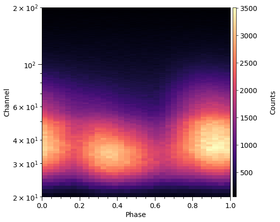
[8]:
fig = plt.figure(figsize = (10,10))
ax = fig.add_subplot(111)
veneer((5, 25), (None,None), ax)
ax.plot(XMM.data.counts, 'k-', ls='steps', label='XMM')
ax.plot(np.sum(NICER.data.counts, axis=1), 'r-', ls='steps', label='NICER')
ax.legend()
ax.set_yscale('log')
ax.set_ylabel('Counts')
_ = ax.set_xlabel('Channel')
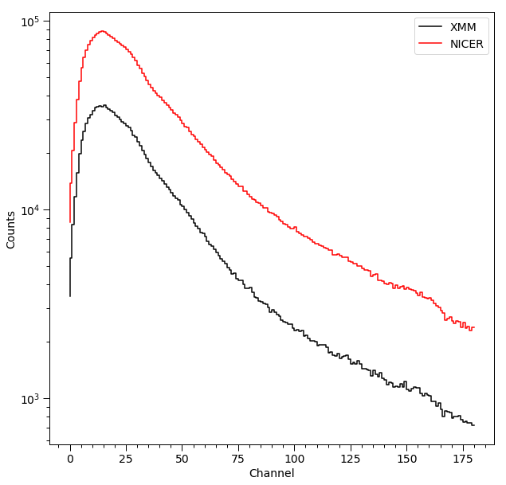
Instrument¶
We require a model instrument object to transform incident specific flux signals into a form which enters directly in the sampling distribution of the data.
[9]:
class CustomInstrument(xpsi.Instrument):
""" A model of the NICER telescope response. """
def __call__(self, signal, *args):
""" Overwrite base just to show it is possible.
We loaded only a submatrix of the total instrument response
matrix into memory, so here we can simplify the method in the
base class.
"""
matrix = self.construct_matrix()
self._folded_signal = np.dot(matrix, signal)
return self._folded_signal
@classmethod
def from_response_files(cls, ARF, RMF, max_input, min_input=0,
channel_edges=None, translate_edges=None, scaling=None):
""" Constructor which converts response files into :class:`numpy.ndarray`s.
:param str ARF: Path to ARF which is compatible with
:func:`numpy.loadtxt`.
:param str RMF: Path to RMF which is compatible with
:func:`numpy.loadtxt`.
:param str channel_edges: Optional path to edges which is compatible with
:func:`numpy.loadtxt`.
"""
if min_input != 0:
min_input = int(min_input)
max_input = int(max_input)
try:
ARF = np.loadtxt(ARF, dtype=np.double, skiprows=3)
RMF = np.loadtxt(RMF, dtype=np.double)
if channel_edges:
channel_edges = np.loadtxt(channel_edges, dtype=np.double, skiprows=3)[:,1:]
except:
print('A file could not be loaded.')
raise
if scaling is not None:
ARF[:,3] *= scaling
matrix = np.ascontiguousarray(RMF[min_input:max_input,20:201].T, dtype=np.double)
edges = np.zeros(ARF[min_input:max_input,3].shape[0]+1, dtype=np.double)
edges[0] = ARF[min_input,1]; edges[1:] = ARF[min_input:max_input,2]
for i in range(matrix.shape[0]):
matrix[i,:] *= ARF[min_input:max_input,3]
channels = np.arange(20, 201)
if translate_edges is not None:
edges += translate_edges
return cls(matrix, edges, channels, channel_edges[20:202,-2])
Let’s construct an instance.
[10]:
NICER.instrument = CustomInstrument.from_response_files(ARF = '../../examples/examples_modeling_tutorial/model_data/nicer_v1.01_arf.txt',
RMF = '../../examples/examples_modeling_tutorial/model_data/nicer_v1.01_rmf_matrix.txt',
max_input = 500,
min_input = 0,
channel_edges = '../../examples/examples_modeling_tutorial/model_data/nicer_v1.01_rmf_energymap.txt')
Setting channels for loaded instrument response (sub)matrix...
Channels set.
No parameters supplied... empty subspace created.
[11]:
XMM.instrument = CustomInstrument.from_response_files(ARF = '../../examples/examples_modeling_tutorial/model_data/nicer_v1.01_arf.txt',
scaling = 0.5,
RMF = '../../examples/examples_modeling_tutorial/model_data/nicer_v1.01_rmf_matrix.txt',
max_input = 500,
min_input = 0,
channel_edges = '../../examples/examples_modeling_tutorial/model_data/nicer_v1.01_rmf_energymap.txt',
translate_edges = 0.1)
Setting channels for loaded instrument response (sub)matrix...
Channels set.
No parameters supplied... empty subspace created.
The NICER v1.01 response matrix:
[12]:
fig = plt.figure(figsize = (14,7))
ax = fig.add_subplot(111)
veneer((25, 100), (10, 50), ax)
_ = ax.imshow(NICER.instrument.matrix,
cmap = cm.viridis,
rasterized = True)
ax.set_ylabel('Channel $-\;20$')
_ = ax.set_xlabel('Energy interval')
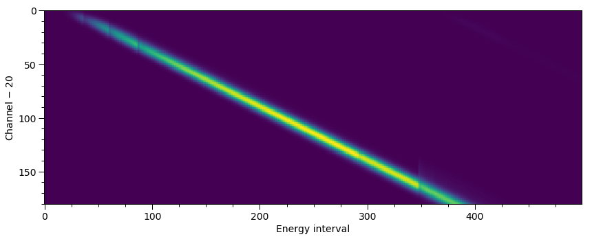
Summed over channel subset \([20,200]\):
[13]:
fig = plt.figure(figsize = (10,10))
ax = fig.add_subplot(111)
veneer((0.1, 0.5), (50,250), ax)
ax.plot((NICER.instrument.energy_edges[:-1] + NICER.instrument.energy_edges[1:])/2.0,
np.sum(NICER.instrument.matrix, axis=0), 'k-')
ax.plot((XMM.instrument.energy_edges[:-1] + XMM.instrument.energy_edges[1:])/2.0,
np.sum(XMM.instrument.matrix, axis=0), 'r-')
ax.set_ylabel('Effective area [cm$^{-2}$]')
_ = ax.set_xlabel('Energy [keV]')
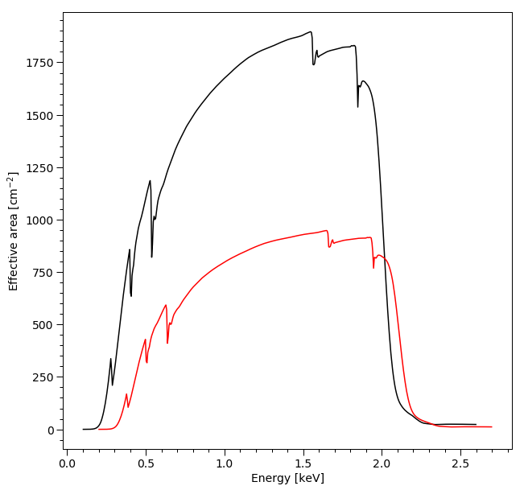
Signal¶
[14]:
from xpsi.likelihoods.default_background_marginalisation import eval_marginal_likelihood
from xpsi.likelihoods.default_background_marginalisation import precomputation
class CustomSignal(xpsi.Signal):
""" A custom calculation of the logarithm of the likelihood.
We extend the :class:`xpsi.Signal.Signal` class to make it callable.
We overwrite the body of the __call__ method. The docstring for the
abstract method is copied.
"""
def __init__(self, workspace_intervals = 1000, epsabs = 0, epsrel = 1.0e-8,
epsilon = 1.0e-3, sigmas = 10.0, support = None, *args, **kwargs):
""" Perform precomputation. """
super(CustomSignal, self).__init__(*args, **kwargs)
try:
self._precomp = precomputation(self._data.counts.astype(np.int32))
except AttributeError:
print('Warning: No data... can synthesise data but cannot evaluate a '
'likelihood function.')
else:
self._workspace_intervals = workspace_intervals
self._epsabs = epsabs
self._epsrel = epsrel
self._epsilon = epsilon
self._sigmas = sigmas
if support is not None:
self._support = support
else:
self._support = -1.0 * np.ones((self._data.counts.shape[0],2))
self._support[:,0] = 0.0
@property
def support(self):
return self._support
@support.setter
def support(self, obj):
self._support = obj
def __call__(self, **kwargs):
self.loglikelihood, self.expected_counts, self.background_signal, self.background_given_support = \
eval_marginal_likelihood(self._data.exposure_time,
self._data.phases,
self._data.counts,
self._signals,
self._phases,
self._shifts,
self._precomp,
self._support,
self._workspace_intervals,
self._epsabs,
self._epsrel,
self._epsilon,
self._sigmas,
kwargs.get('llzero'))
Note that if we need an additional overall phase shift parameter for additional instruments whose recorded data are phase resolved, then it could be passed to the subclass above for the signal associated with a given telescope.
[15]:
NICER.signal = CustomSignal(data = NICER.data,
instrument = NICER.instrument,
background = None,
interstellar = None,
workspace_intervals = 1000,
epsrel = 1.0e-8,
epsilon = 1.0e-3,
sigmas = 10.0)
Creating parameter:
> Named "phase_shift" with fixed value 0.000e+00.
> The phase shift for the signal, a periodic parameter [cycles].
[16]:
XMM.signal = CustomSignal(data = XMM.data,
instrument = XMM.instrument,
background = None,
interstellar = None,
support = None,
workspace_intervals = 1000,
epsrel = 1.0e-8,
epsilon = 1.0e-3,
sigmas = 10.0)
Creating parameter:
> Named "phase_shift" with fixed value 0.000e+00.
> The phase shift for the signal, a periodic parameter [cycles].
Star¶
[17]:
bounds = dict(distance = (None, None), # (Earth) distance
mass = (None, None), # mass
radius = (None, None), # equatorial radius
cos_inclination = (None, None)) # (Earth) inclination to rotation axis
values = dict(frequency=300.0 ) # spin frequency
spacetime = xpsi.Spacetime(bounds=bounds, values=values)
Creating parameter:
> Named "frequency" with fixed value 3.000e+02.
> Spin frequency [Hz].
Creating parameter:
> Named "mass" with bounds [1.000e-03, 3.000e+00].
> Gravitational mass [solar masses].
Creating parameter:
> Named "radius" with bounds [1.000e+00, 2.000e+01].
> Coordinate equatorial radius [km].
Creating parameter:
> Named "distance" with bounds [1.000e-02, 3.000e+01].
> Earth distance [kpc].
Creating parameter:
> Named "cos_inclination" with bounds [-1.000e+00, 1.000e+00].
> Cosine of Earth inclination to rotation axis.
[18]:
bounds = dict(super_colatitude = (None, None),
super_radius = (None, None),
phase_shift = (-0.5, 0.5),
super_temperature = (None, None))
# a simple circular, simply-connected spot
primary = xpsi.HotRegion(bounds=bounds,
values={}, # no initial values and no derived/fixed
symmetry=True,
omit=False,
cede=False,
concentric=False,
sqrt_num_cells=32,
min_sqrt_num_cells=10,
max_sqrt_num_cells=64,
num_leaves=100,
num_rays=200,
do_fast=False,
prefix='p') # unique prefix needed because >1 instance
Creating parameter:
> Named "super_colatitude" with bounds [0.000e+00, 3.142e+00].
> The colatitude of the centre of the superseding region [radians].
Creating parameter:
> Named "super_radius" with bounds [0.000e+00, 1.571e+00].
> The angular radius of the (circular) superseding region [radians].
Creating parameter:
> Named "phase_shift" with bounds [-5.000e-01, 5.000e-01].
> The phase of the hot region, a periodic parameter [cycles].
Creating parameter:
> Named "super_temperature" with bounds [3.000e+00, 7.000e+00].
> log10(superseding region effective temperature [K]).
[19]:
class derive(xpsi.Derive):
def __init__(self):
"""
We can pass a reference to the primary here instead
and store it as an attribute if there is risk of
the global variable changing.
This callable can for this simple case also be
achieved merely with a function instead of a magic
method associated with a class.
"""
pass
def __call__(self, boundto, caller = None):
# one way to get the required reference
global primary # unnecessary, but for clarity
return primary['super_temperature'] - 0.2
bounds['super_temperature'] = None # declare fixed/derived variable
secondary = xpsi.HotRegion(bounds=bounds, # can otherwise use same bounds
values={'super_temperature': derive()}, # create a callable value
symmetry=True,
omit=False,
cede=False,
concentric=False,
sqrt_num_cells=32,
min_sqrt_num_cells=10,
max_sqrt_num_cells=100,
num_leaves=100,
num_rays=200,
do_fast=False,
is_antiphased=True,
prefix='s') # unique prefix needed because >1 instance
Creating parameter:
> Named "super_colatitude" with bounds [0.000e+00, 3.142e+00].
> The colatitude of the centre of the superseding region [radians].
Creating parameter:
> Named "super_radius" with bounds [0.000e+00, 1.571e+00].
> The angular radius of the (circular) superseding region [radians].
Creating parameter:
> Named "phase_shift" with bounds [-5.000e-01, 5.000e-01].
> The phase of the hot region, a periodic parameter [cycles].
Creating parameter:
> Named "super_temperature" that is derived from ulterior variables.
> log10(superseding region effective temperature [K]).
[20]:
from xpsi import HotRegions
hot = HotRegions((primary, secondary))
[21]:
class CustomPhotosphere(xpsi.Photosphere):
""" Implement method for imaging."""
def _global_variables(self):
return np.array([self['p__super_colatitude'],
self['p__phase_shift'] * _2pi,
self['p__super_radius'],
self['p__super_temperature'],
self['s__super_colatitude'],
(self['s__phase_shift'] + 0.5) * _2pi,
self['s__super_radius'],
self.hot.objects[1]['s__super_temperature']])
[22]:
photosphere = CustomPhotosphere(hot = hot, elsewhere = None,
values=dict(mode_frequency = spacetime['frequency']))
Creating parameter:
> Named "mode_frequency" with fixed value 3.000e+02.
> Coordinate frequency of the mode of radiative asymmetry in the
photosphere that is assumed to generate the pulsed signal [Hz].
[23]:
star = xpsi.Star(spacetime = spacetime, photospheres = photosphere)
[24]:
likelihood = xpsi.Likelihood(star = star, signals = [NICER.signal, XMM.signal],
threads = 1, externally_updated = False)
The instrument wavebands exhibit a high degree of overlap. The energies at which we compute incident specific flux signals are based on the union of wavebands, distributed logarithmically:
[25]:
fig = plt.figure(figsize=(8,8))
plt.plot(XMM.signal.energies, 'kx')
ax = plt.gca()
veneer((5,20),(0.2,1.0),ax)
ax.set_xlabel('Index')
_ = ax.set_ylabel('Energy [keV]')
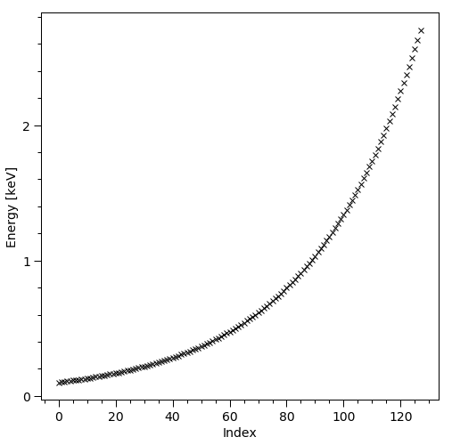
This is a simple, non-adaptive protocol to ensure that signals are not computed at very nearby energies for multiple telescopes, resulting in overhead.
Let’s call the likelihood object with the true model parameter values that we injected to generate the synthetic data rendered above, omitting background parameters:
[26]:
p = [1.4,
12.5,
0.2,
math.cos(1.25),
0.0,
1.0,
0.075,
6.2,
0.025,
math.pi - 1.0,
0.2]
t = time.time()
ll = likelihood(p, force=True) # force if you want to clear parameter value caches
print('ll = %.8f; time = %.3f' % (ll, time.time() - t))
ll = -29322.44238519; time = 0.763
[27]:
NICER.signal.loglikelihood # check NICER ll ~ -26713.602 ?
[27]:
-26713.601349482524
[28]:
XMM.signal.loglikelihood # check XMM ll ~ -2608.841 ?
[28]:
-2608.841035710227
Let’s fabricate some rough prior information as the constrained support of the background parameters for XMM:
[29]:
support = np.zeros((181, 2))
support[:,0] = XMM.signal.background_signal - 5.0 * np.sqrt(XMM.signal.background_signal)
support[:,1] = XMM.signal.background_signal + 5.0 * np.sqrt(XMM.signal.background_signal)
support /= XMM.data.exposure_time
[30]:
XMM.signal.support = support
[31]:
ll = likelihood(p, force=True)
Let’s confirm that the XMM background-marginalised likelihood did indeed change:
[32]:
XMM.signal.loglikelihood
[32]:
-2610.1216095310615
The background-marginalised likelihood function has the following form. Subscripts N denote NICER, whilst subscripts X denote XMM.
The term \(p(\{\mathbb{E}[b_{\rm X}]\} \,|\, \{b_{\rm X}\})\) truncates the integral over XMM channel-by-channel background count rate variables to an interval \([a,b]\) in each channel, where \(a,b\in\mathbb{R}^{+}\). This is the joint prior support of the variables \(\{\mathbb{E}[b_{\rm X}]\}\) rendered in the spectral plot below. The form of the prior density \(p(\{\mathbb{E}[b_{\rm X}]\} \,|\, \{b_{\rm X}\})\) is flat on this interval for each channel. This is a simplifying approximation to the probability of the background data \(\{b_{\rm X}\}\) given the variables \(\{\mathbb{E}[b_{\rm X}]\}\).
[33]:
def plot_spectrum():
fig = plt.figure(figsize = (10,10))
ax = fig.add_subplot(111)
veneer((5, 25), (None,None), ax)
ax.fill_between(np.arange(support.shape[0]),
support[:,0]*XMM.data.exposure_time,
support[:,1]*XMM.data.exposure_time,
step = 'pre',
color = 'k',
alpha = 0.5,
label = 'background support')
ax.plot(XMM.signal.background_signal, 'b-', ls='steps', label='MCL background')
ax.plot(XMM.signal.expected_counts, 'k-', ls='steps', label='MCL counts given support', lw=5.0)
ax.plot(XMM.data.counts, 'r-', ls='steps', label='XMM data')
ax.legend()
ax.set_yscale('log')
ax.set_ylabel('Counts')
_ = ax.set_xlabel('Channel')
[34]:
plot_spectrum()
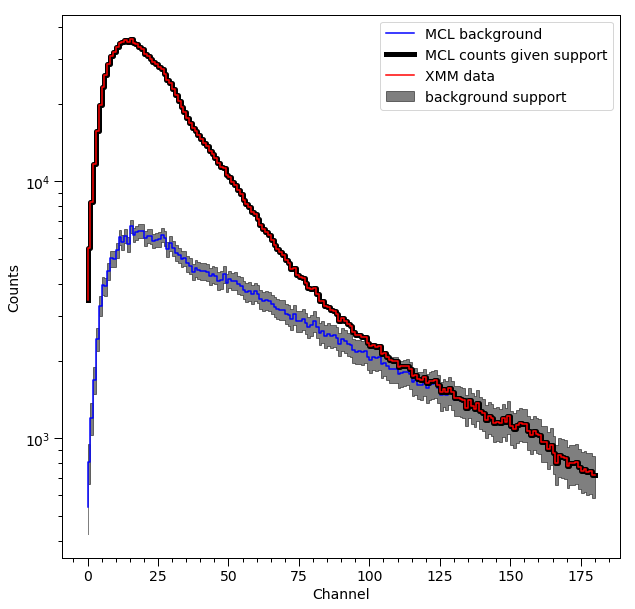
The spectrum labelled MCL counts given support means the expected signal from the pulsar, plus the background count vector that maximises the conditional likelihood function given that pulsar signal, subject to the background vector existing in the prior support. The spectrum labelled MCL background, on the other hand, is the background vector that maximises the conditional likelihood function, but not subject to the prior support.
[35]:
likelihood['p__super_temperature'] = 6.1
[36]:
likelihood.externally_updated = True
[37]:
likelihood()
[37]:
-391383.432561544
[38]:
XMM.signal.loglikelihood
[38]:
-321117.0621271402
[39]:
plot_spectrum()
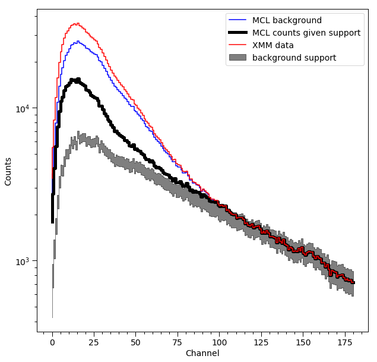
Synthesis¶
In this notebook thus far we have not generated sythetic data. However, we did condition on synthetic data. Below we outline how that data was generated.
Background¶
The background radiation field incident on the model instrument for the purpose of generating synthetic data was a time-invariant powerlaw spectrum, and was transformed into a count-rate in each output channel using the response matrix for synthetic data generation. We would reproduce this background here by writing a custom subclass as follows.
[40]:
class CustomBackground(xpsi.Background):
""" The background injected to generate synthetic data. """
def __init__(self, bounds=None, value=None):
# first the parameters that are fundemental to this class
doc = """
Powerlaw spectral index.
"""
index = xpsi.Parameter('powerlaw_index',
strict_bounds = (-3.0, -1.01),
bounds = bounds,
doc = doc,
symbol = r'$\Gamma$',
value = value,
permit_prepend = False) # because to be shared by multiple objects
super(CustomBackground, self).__init__(index)
def __call__(self, energy_edges, phases):
""" Evaluate the incident background field. """
G = self['powerlaw_index']
temp = np.zeros((energy_edges.shape[0] - 1, phases.shape[0]))
temp[:,0] = (energy_edges[1:]**(G + 1.0) - energy_edges[:-1]**(G + 1.0)) / (G + 1.0)
for i in range(phases.shape[0]):
temp[:,i] = temp[:,0]
self._incident_background = temp
[41]:
background = CustomBackground(bounds=(None, None)) # use strict bounds, but do not fix/derive
Creating parameter:
> Named "powerlaw_index" with bounds [-3.000e+00, -1.010e+00].
> Powerlaw spectral index.
We will use this same background signal, albeit with different normalisations, for both telescopes. This is simply to generate finite background contributions.
Data format¶
We are also in need of a simpler data object.
[42]:
class SynthesiseData(xpsi.Data):
""" Custom data container to enable synthesis. """
def __init__(self, channels, phases, first, last):
self.channels = channels
self._phases = phases
try:
self._first = int(first)
self._last = int(last)
except TypeError:
raise TypeError('The first and last channels must be integers.')
if self._first >= self._last:
raise ValueError('The first channel number must be lower than the '
'the last channel number.')
Instantiate:
[43]:
NICER.synth = SynthesiseData(np.arange(20,201), np.linspace(0.0, 1.0, 33), 0, 180)
Setting channels for event data...
Channels set.
[44]:
XMM.synth = SynthesiseData(np.arange(20,201), np.array([0.0,1.0]), 0, 180)
Setting channels for event data...
Channels set.
Custom method¶
[45]:
from xpsi.tools.synthesise import synthesise_given_total_count_number as _synthesise
[46]:
def synthesise(self,
require_source_counts,
require_background_counts,
name='synthetic',
directory='./data',
**kwargs):
""" Synthesise data set.
"""
self._expected_counts, synthetic, _, _ = _synthesise(self._data.phases,
require_source_counts,
self._signals,
self._phases,
self._shifts,
require_background_counts,
self._background.registered_background)
try:
if not os.path.isdir(directory):
os.mkdir(directory)
except OSError:
print('Cannot create write directory.')
raise
np.savetxt(os.path.join(directory, name+'_realisation.dat'),
synthetic,
fmt = '%u')
self._write(self.expected_counts,
filename = os.path.join(directory, name+'_expected_hreadable.dat'),
fmt = '%.8e')
self._write(synthetic,
filename = os.path.join(directory, name+'_realisation_hreadable.dat'),
fmt = '%u')
def _write(self, counts, filename, fmt):
""" Write to file in human readable format. """
rows = len(self._data.phases) - 1
rows *= len(self._data.channels)
phases = self._data.phases[:-1]
array = np.zeros((rows, 3))
for i in range(counts.shape[0]):
for j in range(counts.shape[1]):
array[i*len(phases) + j,:] = self._data.channels[i], phases[j], counts[i,j]
np.savetxt(filename, array, fmt=['%u', '%.6f'] + [fmt])
[47]:
CustomSignal.synthesise = synthesise
CustomSignal._write = _write
We now need to instantiate, and reconfigure the likelihood object:
[48]:
NICER.signal = CustomSignal(data = NICER.synth,
instrument = NICER.instrument,
background = background,
interstellar = None,
workspace_intervals = 1000,
epsrel = 1.0e-8,
epsilon = 1.0e-3,
sigmas = 10.0,
prefix='NICER')
XMM.signal = CustomSignal(data = XMM.synth,
instrument = XMM.instrument,
background = background,
interstellar = None,
workspace_intervals = 1000,
epsrel = 1.0e-8,
epsilon = 1.0e-3,
sigmas = 10.0,
prefix='XMM')
for h in hot.objects:
h.set_phases(num_leaves = 100)
likelihood = xpsi.Likelihood(star = star, signals = [NICER.signal, XMM.signal], threads=1)
Creating parameter:
> Named "phase_shift" with fixed value 0.000e+00.
> The phase shift for the signal, a periodic parameter [cycles].
Warning: No data... can synthesise data but cannot evaluate a likelihood function.
Creating parameter:
> Named "phase_shift" with fixed value 0.000e+00.
> The phase shift for the signal, a periodic parameter [cycles].
Warning: No data... can synthesise data but cannot evaluate a likelihood function.
Synthesise¶
We proceed to synthesise. First we set an environment variable to seed the random number generator being called:
[49]:
%env GSL_RNG_SEED=0
env: GSL_RNG_SEED=0
Check write path:
[50]:
!pwd
/home/tuomo/xpsi/xpsi_group/xpsi/docs/source
[51]:
likelihood
[51]:
Free parameters
---------------
mass: Gravitational mass [solar masses].
radius: Coordinate equatorial radius [km].
distance: Earth distance [kpc].
cos_inclination: Cosine of Earth inclination to rotation axis.
p__phase_shift: The phase of the hot region, a periodic parameter [cycles].
p__super_colatitude: The colatitude of the centre of the superseding region [radians].
p__super_radius: The angular radius of the (circular) superseding region [radians].
p__super_temperature: log10(superseding region effective temperature [K]).
s__phase_shift: The phase of the hot region, a periodic parameter [cycles].
s__super_colatitude: The colatitude of the centre of the superseding region [radians].
s__super_radius: The angular radius of the (circular) superseding region [radians].
powerlaw_index: Powerlaw spectral index.
[52]:
p = [1.4,
12.5,
0.2,
math.cos(1.25),
0.0,
1.0,
0.075,
6.2,
0.025,
math.pi - 1.0,
0.2,
-2.0]
NICER_kwargs = dict(require_source_counts = 2.0e6,
require_background_counts = 2.0e6,
name = 'new_NICER',
directory = './data')
XMM_kwargs = dict(require_source_counts = 1.0e6,
require_background_counts = 5.0e5,
name = 'new_XMM',
directory = './data')
likelihood.synthesise(p,
force = True,
NICER = NICER_kwargs,
XMM = XMM_kwargs) # SEED=0
Exposure time: 984282.620969 [s]
Background normalisation: 1.89132784e-05
Exposure time: 1818398.718453 [s]
Background normalisation: 2.21412640e-04
Notice that the normalisations, with units photons/s/cm^2/keV, are different because we require so many background counts. This detail is unimportant for this notebook, wherein we simply want some finite background contributions.
[53]:
plot_one_pulse(np.loadtxt('data/new_NICER_realisation.dat', dtype=np.double), NICER.data.phases, NICER.data)
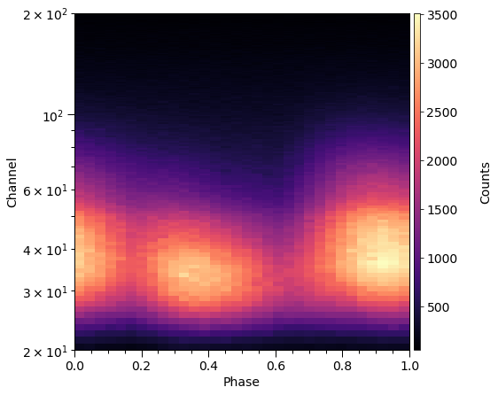
Check we have generated the same count numbers, given the same seed and resolution settings:
[54]:
diff = XMM.data.counts - np.loadtxt('data/new_XMM_realisation.dat', dtype=np.double).reshape(-1,1)
(diff != 0.0).any()
[54]:
True
[55]:
diff = NICER.data.counts - np.loadtxt('data/new_NICER_realisation.dat', dtype=np.double)
(diff != 0.0).any()
[55]:
True
As discussed in the Modeling tutorial, with xpsi.__version__ of v0.6, the same RNG seed does not yield the same (\(\pm1\)) count numbers, despite the small fractional difference between Poisson random variable expectations, for reasons that are unclear at present.
[56]:
x = np.loadtxt('../../examples/examples_modeling_tutorial/model_data/example_synthetic_expected_hreadable.dat')
y = np.loadtxt('data/new_NICER_expected_hreadable.dat')
xx = np.zeros(NICER.data.counts.shape)
yy = np.zeros(NICER.data.counts.shape)
for i in range(xx.shape[0]):
for j in range(xx.shape[1]):
xx[i,j] = x[i*32 + j,-1]
yy[i,j] = y[i*32 + j,-1]
[57]:
plot_one_pulse(yy-xx, NICER.data.phases, NICER.data)
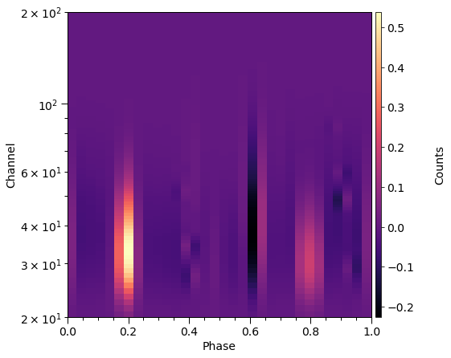
[58]:
_r = (yy-xx)/np.sqrt(yy)
plot_one_pulse(_r, NICER.data.phases, NICER.data,
'Standardised residuals',
cmap=cm.RdBu,
vmin=-np.max(np.fabs(_r)),
vmax=np.max(np.fabs(_r)))
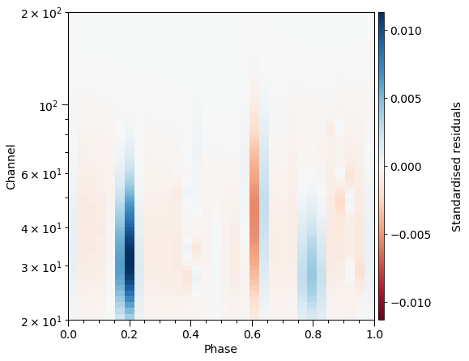
[59]:
plot_one_pulse(diff, NICER.data.phases, NICER.data)
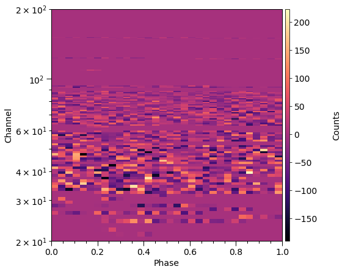